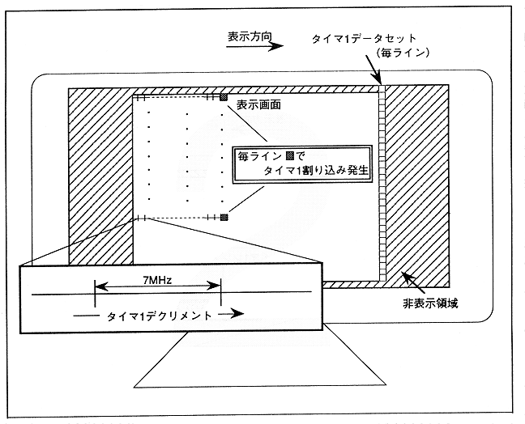

Figure 2.14 shows the process until a timer 1 interrupt is generated asynchronously with timer 0. In terms of operation, it is the same as when synchronizing, but each line is judged and an interrupt is generated.
Figure 2.14 Timer 1 interrupt generation process (asynchronous with timer 0)
